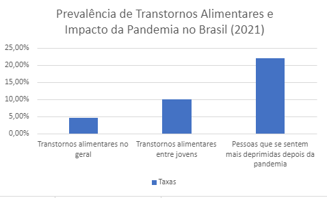
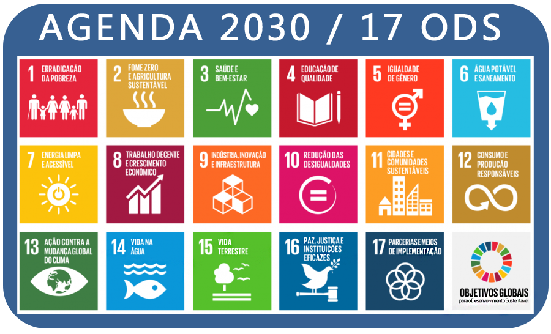

Justificativa do site
Os dados e estatísticas que justificam a tematica escolhida para o site têm como base informações da Organização Mundial de Saúde, do Ministério da Saúde e da Associação Brasileira de Psiquiatria.

Segundo a OMS e o Ministério da Saúde, cerca de 5% da população brasileira apresenta algum transtorno alimentar, mas, quando voltados para os jovens e adolescentes, os dados são muito maiores: por volta de 10% deles têm diagnóstico de distúrbio.
Outro dado relevante apresentado no gráfico é o aumento de jovens deprimidos depois da pandemia de Covid-19. Segundo o Fundo de Emergência Internacional das Nações Unidas para a Infância (Unicef), 22% das dos jovens e adolescente brasileiros se sentem mais deprimidos após esse período.
Segundo a Associação Brasileira de Psiquiatria, cerca de 70 milhões de pessoas no mundo sejam afetadas por algum tipo de transtorno alimentar.
Sustentabilidade
Este site, DistúrbioZero, tem como objetivo auxiliar o avanço da sustentabilidade no Brasil. Para isso, tivemos como foco a Agenda 2030 (o site da ONU do Brasil pode ser acessado clicando aqui), na qual foram estabelecidos 17 Objetivos de Desenvolvimento Sustentável (ODS). Sendo assim, nosso projeto se baseou nos que, de forma resumida, querem reforçar a educação de qualidade, a saúde alimentar e o bem-estar para todos, eles são o ODS 2, 3 e 4.

Neste site, proporcionamos acesso à informações verídicas e com base em artigos científicos. Além disso, estamos de acordo com o objetivo 4, que afirma o seguinte:
"Assegurar a educação inclusiva e equitativa e de qualidade, e promover oportunidades de aprendizagem ao longo da vida para todas e todos."
Então, garantimos essa meta por proporcionar fatos sobre transtornos alimentares para todas as pessoas que acessarem.
Além do mais, com as informações aqui transmitidas, levamos saúde e bem estar aos leitores, como orienta o 3º objetivo da Agenda 2030:
"Assegurar uma vida saudável e promover o bem-estar para todas e todos, em todas as idades".
Portanto, qualquer pessoa, independentemente da idade ou do gênero, que se interesse pelo assunto abordado aqui, pode acessar esta página web e obter conhecimento sobre saúde.
Por fim, também estamos embasados no 2° ODS. Ele sugere o seguinte:
"Acabar com a fome, alcançar a segurança alimentar e melhoria da nutrição e promover a agricultura sustentável".
A parte que estamos atuando é a de melhorar a nutrição. Afinal, é notório que, quando uma pessoa tem um transtorno alimentar, sua nutrição está desbalanceada. Logo, ao promover um site que auxilie esses indivíduos a entenderem seus transtornos e a procurar ajuda profissional, estamos gerando uma população que sabe o que fazer e identificar quando sua alimentação não estiver equilibrada e, assim, melhorar seu estado nutricional.
Desse modo, este site promove o desenvolvimento sustentável. Como discutido anteriormente, estamos de acordo com 3 dos 17 objetivos da Agenda 2030. Sendo assim, esta página web é sustentável e deseja gerar leitores que também se preocupem com o meio ambiente e o seu bem-estar.
Durante as aulas de Laboratório de Investigação Científica, entendemos o que são as pesquisas acadêmicas, lemos trabalhos científicos e criamos o nosso próprio artigo com as orientações da professora Sâmela.
O tema escolhido foi o mesmo deste site: distúrbios alimentares.
O artigo está disponível para leitura, é só clicar aqui.